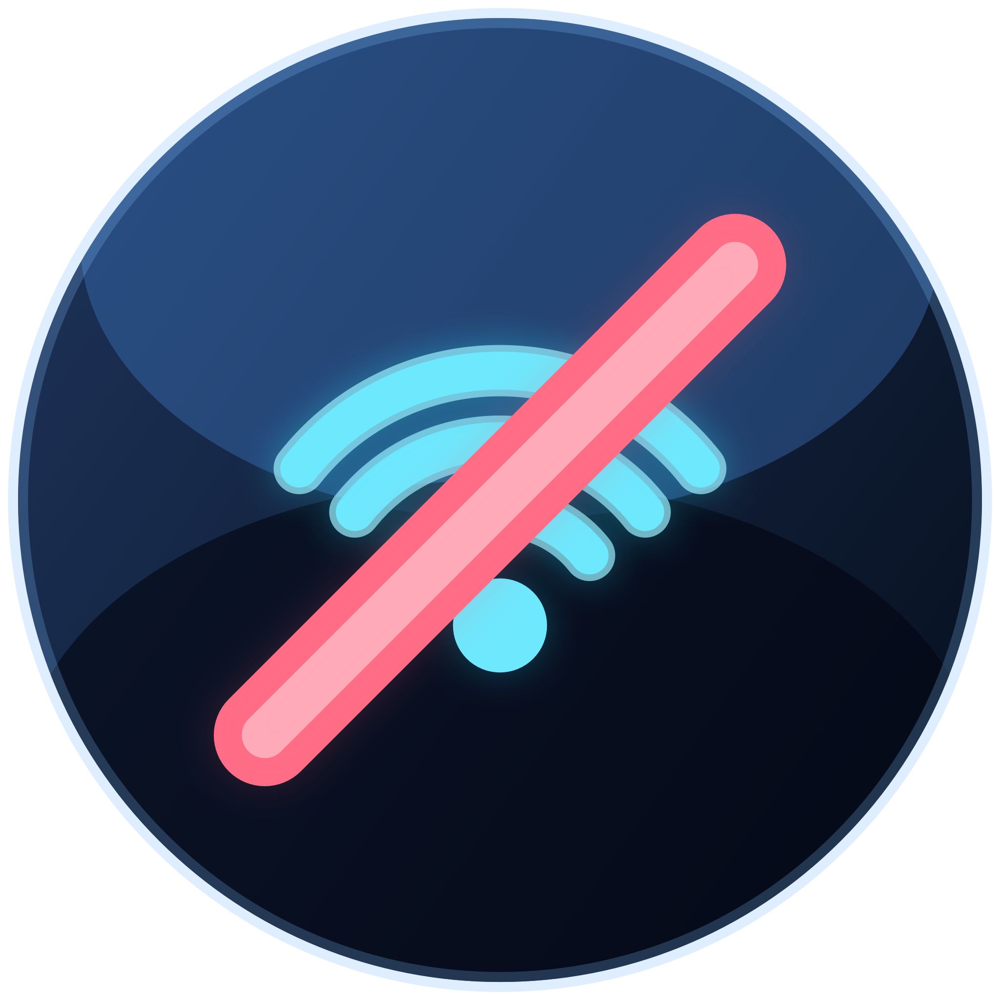
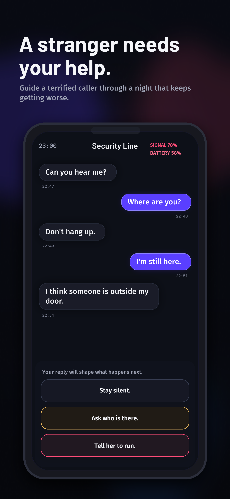
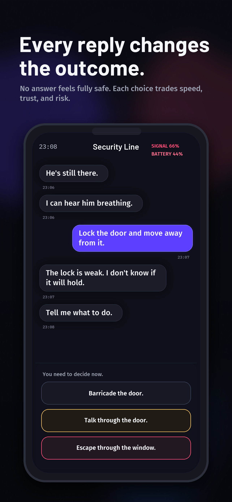
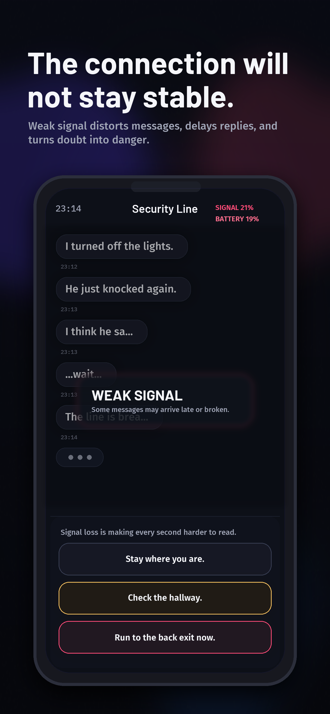
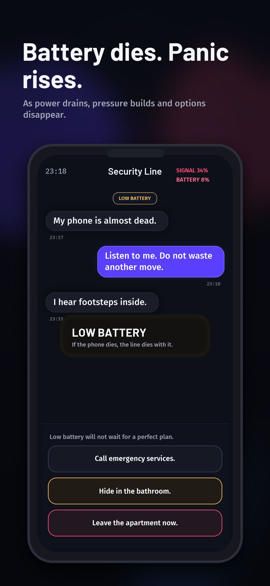
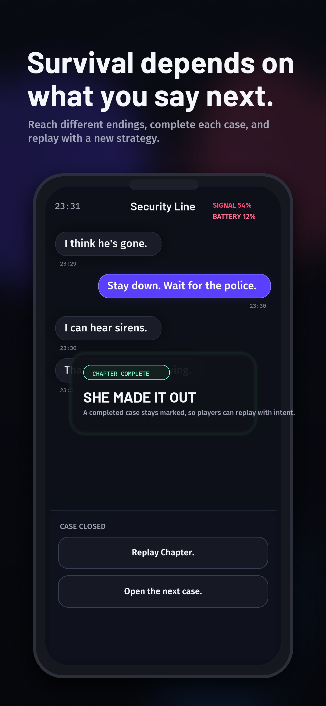

Real-time pressure
Messages arrive with delays, typing pauses, signal drops, and battery pressure that keep every decision under stress.

No SignalPsychological Thriller
A stranger reaches out in the middle of the night. The connection is unstable. Someone is outside the door. Every reply changes trust, panic, signal, and survival.

Messages arrive with delays, typing pauses, signal drops, and battery pressure that keep every decision under stress.
No answer feels fully safe. Every response trades speed, certainty, trust, and risk in ways that reshape the run.
Survive, fail, or escape injured. Replay chapters to uncover different endings and completed case states.
What It Feels Like
No Signal is built around atmosphere, pacing, and incomplete information. You never see the threat directly. The fear comes from what you hear, what you miss, and what you tell someone to do next.
App Store Screens



